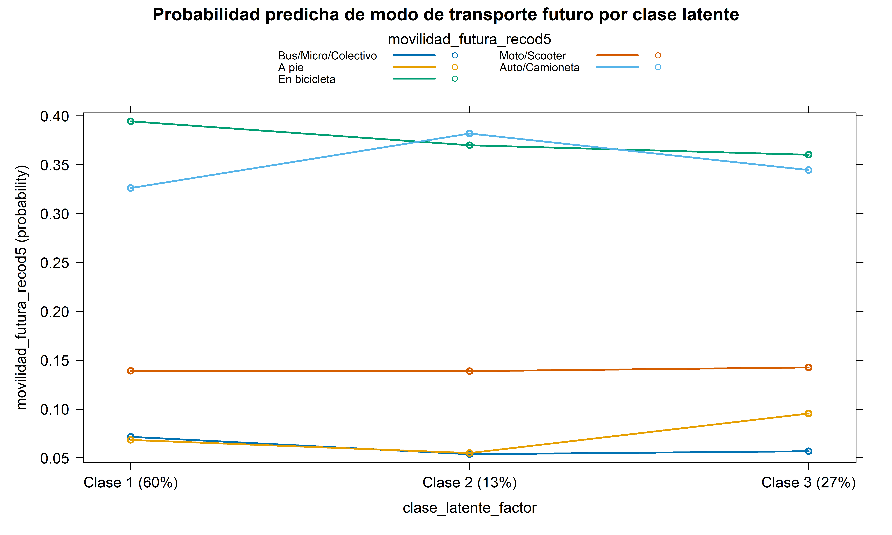

# Cargar paquetes necesarios
library(tidyverse) # Para manipulación y visualización de datos
library(poLCA) # Para análisis de clases latentes
library(knitr) # Para presentación de tablas
library(kableExtra) # Para mejorar el formato de tablas
library(ggplot2) # Para visualizaciones avanzadas
library(gridExtra) # Para combinar gráficos
library(here) # Para rutas de archivos relativas al proyecto
library(haven) # Para leer archivos SPSS (.sav)
library(nnet) # Para modelos multinomiales
library(effects) # Para visualizar efectos
library(scales) # Para formato en gráficosIntroducción
Este documento presenta un análisis sociológico de clases latentes para identificar perfiles ambientales y su relación con patrones de movilidad. El análisis tiene dos componentes principales:
- Análisis de Clases Latentes: Identificamos grupos latentes basados en actitudes ambientales
- Modelo Multinomial: Analizamos la relación entre las clases latentes identificadas y los patrones de movilidad
El estudio utiliza datos de la región del Maule (Chile) e integra variables sociodemográficas y actitudes medioambientales.
Configuración inicial
Carga y Preparación de Datos
Carga de datos base
# Cargar datos desde archivo SPSS
datos <- read_sav(here("datos", "BBDD Consolidada Maule UCM Codificada 20220307.sav"))Análisis de Clases Latentes (LCA)
Preparación de variables para el modelo LCA
Preparamos dos conjuntos de variables para el análisis de clases latentes:
- Escala de Modo de Vida Imperial (MVI): Refleja actitudes favorables a estilos de vida con altas emisiones de carbono
- Escala de Reflexividad Ambiental Antropocéntrica (RAA): Refleja conciencia sobre problemas ambientales desde una perspectiva centrada en el ser humano
# Escala de Modo de Vida Imperial (MVI)
vars_mvi <- c("P7_2", "P7_4", "P7_5", "P4_2", "P4_4")
# Escala de Reflexividad Ambiental Antropocéntrica (RAA)
vars_raa <- c("P7_1", "P7_3", "P4_1", "P4_3")
# Recodificar P4_1 y P4_3 para mantener coherencia con las escalas
datos <- datos %>%
mutate(
urgenciacrisis = 5 - P4_1,
actividadeshumanas = 5 - P4_3
)
# Variables seleccionadas para el modelo
vars_modelo <- datos %>%
dplyr::select(P7_2, P7_4, P7_5, P4_2, P4_4,
P7_1, P7_3, urgenciacrisis, actividadeshumanas)
# Dicotomizar las variables (1 = desacuerdo, 2 = acuerdo)
vars_modelo <- vars_modelo %>%
mutate(across(everything(),
~ifelse(is.na(.), NA, ifelse(. >= 3, 2, 1))))
# Preparación de datos con covariables
datos_modelo <- vars_modelo %>%
mutate(
# Añadir clase social como covariable
clase_social = datos_clase$clase_social_cat,
# Categorizar edad
edad = case_when(
datos$M5 >= 18 & datos$M5 <= 24 ~ 1,
datos$M5 >= 25 & datos$M5 <= 34 ~ 2,
datos$M5 >= 35 & datos$M5 <= 44 ~ 3,
datos$M5 >= 45 & datos$M5 <= 54 ~ 4,
datos$M5 >= 55 & datos$M5 <= 64 ~ 5,
datos$M5 >= 65 ~ 6,
TRUE ~ NA_real_
),
edad = factor(edad,
levels = c(1, 2, 3, 4, 5, 6),
labels = c("18 a 24 años", "25 a 34 años", "35 a 44 años",
"45 a 54 años", "55 a 64 años", "65 años o más")),
# Sexo (M1)
sexo = factor(datos$M1),
# Posición política (M11)
posicion_politica = case_when(
datos$M11 >= 1 & datos$M11 <= 4 ~ "Izquierda",
datos$M11 >= 5 & datos$M11 <= 6 ~ "Centro",
datos$M11 >= 7 & datos$M11 <= 10 ~ "Derecha",
TRUE ~ NA_character_
),
posicion_politica = factor(posicion_politica,
levels = c("Izquierda", "Centro", "Derecha")),
# Rural/Urbano (M12)
rural_urbano = factor(datos$M12,
levels = 1:3,
labels = c("Urbano", "Rural", "Mixto"))
)
# Fórmula con covariables para el modelo LCA
f_covariables <- cbind(P7_2, P7_4, P7_5, P4_2, P4_4,
P7_1, P7_3, urgenciacrisis,
actividadeshumanas) ~ sexo + edad + clase_social + posicion_politica + rural_urbanoAjuste de modelos de clases latentes
Ajustamos modelos con diferente número de clases (de 2 a 4) para determinar la solución óptima:
# Para reproducibilidad
set.seed(123)
# Lista para almacenar los modelos
modelos_cov <- list()
n_clases <- 2:4
# Ajustar modelos
for (i in 1:length(n_clases)) {
cat("Ajustando modelo con", n_clases[i], "clases...\n")
modelos_cov[[i]] <- poLCA(f_covariables, datos_modelo,
nclass = n_clases[i],
maxiter = 1000,
nrep = 5,
verbose = FALSE)
}Ajustando modelo con 2 clases...
Ajustando modelo con 3 clases...
Ajustando modelo con 4 clases...Comparación de modelos
Comparamos los modelos según criterios de información (BIC, AIC) y entropía para determinar el número óptimo de clases:
# Verificar cuáles modelos se ajustaron correctamente
modelos_validos <- !sapply(modelos_cov, is.null)
# Crear tabla de comparación solo con los modelos válidos
if (sum(modelos_validos) > 0) {
# Obtener índices de modelos válidos
indices_validos <- which(modelos_validos)
# Crear vectores para almacenar resultados
clases <- n_clases[indices_validos]
log_likelihood <- numeric(length(indices_validos))
bic_values <- numeric(length(indices_validos))
aic_values <- numeric(length(indices_validos))
entropia_values <- numeric(length(indices_validos))
# Extraer valores de cada modelo válido
for (i in 1:length(indices_validos)) {
idx <- indices_validos[i]
modelo <- modelos_cov[[idx]]
log_likelihood[i] <- modelo$llik
bic_values[i] <- modelo$bic
aic_values[i] <- modelo$aic
entropia_values[i] <- poLCA.entropy(modelo)
}
# Crear tabla de resultados
resultados <- data.frame(
Clases = clases,
Log_likelihood = log_likelihood,
BIC = bic_values,
AIC = aic_values,
Entropia = entropia_values
)
# Mostrar resultados
kable(resultados, digits = 2, caption = "Comparación de modelos LCA") %>%
kable_styling(bootstrap_options = "striped")
# Visualizar criterios de información
if (nrow(resultados) > 1) {
# Gráfico de BIC y AIC
p1 <- ggplot(resultados, aes(x = Clases)) +
geom_line(aes(y = BIC, colour = "BIC"), size = 1) +
geom_point(aes(y = BIC, colour = "BIC"), size = 3) +
geom_line(aes(y = AIC, colour = "AIC"), size = 1) +
geom_point(aes(y = AIC, colour = "AIC"), size = 3) +
theme_minimal() +
labs(title = "Criterios de información por número de clases",
y = "Valor",
colour = "Criterio") +
theme(legend.position = "top")
# Gráfico de entropía
p2 <- ggplot(resultados, aes(x = Clases, y = Entropia)) +
geom_line(size = 1, color = "darkgreen") +
geom_point(size = 3, color = "darkgreen") +
theme_minimal() +
labs(title = "Entropía por número de clases",
y = "Entropía") +
theme(legend.position = "none")
# Mostrar gráficos
grid.arrange(p1, p2, ncol=2)
}
}Basados en estos resultados, seleccionamos el modelo de 3 clases como la solución óptima, considerando el balance entre ajuste del modelo (AIC/BIC) y separación de clases (entropía).
Interpretación del modelo de 3 clases
Analizamos las probabilidades condicionales para interpretar el significado de cada clase latente:
# Seleccionar el modelo de 3 clases (índice 2 porque empezamos con 2 clases)
modelo_cov3 <- modelos_cov[[2]]
# Extraer probabilidades condicionales
probs_clase_cov <- modelo_cov3$probs
# Definir nombres de variables originales y etiquetas para el gráfico
var_originales <- c("P7_2", "P7_4", "P7_5", "P4_2", "P4_4",
"P7_1", "P7_3", "urgenciacrisis", "actividadeshumanas")
etiquetas <- c(
"P7_2" = "Problemas sociales > ambientales (MVI)",
"P7_4" = "Crecimiento sin daño ambiental (MVI)",
"P7_5" = "Problemas ambientales de países desarrollados (MVI)",
"P4_2" = "No cambiar costumbres, tecnología resolverá (MVI)",
"P4_4" = "Progreso es vivir como países desarrollados (MVI)",
"P7_1" = "Resolver problemas cambiando costumbres (RAA)",
"P7_3" = "Clases altas más responsables de crisis (RAA)",
"urgenciacrisis" = "Urgencia de la crisis ambiental (RAA)",
"actividadeshumanas" = "Actividades humanas causan cambios climáticos (RAA)"
)
# Preparar los datos para el gráfico
LMmodelo_cov <- data.frame()
# Para cada variable y cada clase
for (i in 1:length(probs_clase_cov)) {
var_nombre <- var_originales[i]
for (j in 1:3) { # Para las 3 clases
temp_df <- data.frame(
item = var_nombre,
state = j,
category = c(0, 1), # 0 = Desacuerdo, 1 = Acuerdo
value = c(probs_clase_cov[[i]][j, 1], probs_clase_cov[[i]][j, 2])
)
LMmodelo_cov <- rbind(LMmodelo_cov, temp_df)
}
}
# Obtener porcentajes de las clases
porcentajes_cov <- round(modelo_cov3$P * 100, 0)
# Formatear los datos
LMmodelo_cov <- LMmodelo_cov %>%
dplyr::mutate(clase = factor(paste0("Clase ", state, " (", porcentajes_cov[state], "%)"),
levels = paste0("Clase ", 1:3, " (", porcentajes_cov[1:3], "%)"))) %>%
dplyr::mutate(category = factor(ifelse(category == 0, "Desacuerdo", "Acuerdo"),
levels = c("Desacuerdo", "Acuerdo")))
# Gráfico horizontal con barras apiladas
ggplot(LMmodelo_cov, aes(y = factor(item, levels = var_originales, labels = etiquetas[var_originales]),
x = value, fill = category)) +
geom_bar(stat = "identity", position = "stack") +
facet_grid(. ~ clase) + # Clases en columnas
scale_fill_manual(values = c("Desacuerdo" = "#A8D8E8", "Acuerdo" = "#000000")) +
labs(title = "Probabilidades condicionales por clase latente",
subtitle = "Modelo con 3 clases y covariables",
x = "Probabilidad", y = "", fill = "Respuesta") +
theme_minimal() +
theme(
axis.text.y = element_text(size = 10),
strip.text = element_text(size = 11),
legend.position = "top",
panel.grid.major = element_blank()
)Descripción de las clases latentes
Basándonos en el análisis de las probabilidades condicionales, interpretamos cada clase:
Clase 1 (60%, Ambientalismo Moderado): Esta clase se caracteriza por un perfil mixto con alto desacuerdo en reconocer la crisis ambiental y sus causas humanas, pero moderado acuerdo con la necesidad de cambiar costumbres. Muestra alto desacuerdo con afirmaciones sobre la urgencia de la crisis ambiental y la influencia de actividades humanas en el cambio climático, junto con un acuerdo moderado en que el crecimiento es posible sin daño ambiental. Es la clase más numerosa.
Clase 2 (13%, Modo de Vida Imperial): Presenta un perfil interesante con reconocimiento de la crisis ambiental pero menor disposición al cambio. Muestra acuerdo moderado en que las actividades humanas causan cambios climáticos y sobre la urgencia de la crisis ambiental, pero también apoya ideas de que el crecimiento es posible sin daño ambiental. Demuestra menor acuerdo con la necesidad de cambiar costumbres y estilos de vida para resolver problemas ambientales.
Clase 3 (27%, Ambientalismo Crítico): Muestra un perfil contradictorio con posiciones fuertes en ambas escalas (MVI y RAA). Presenta muy alto desacuerdo con reconocer la urgencia de la crisis ambiental y la influencia humana, pero simultáneamente muestra alto acuerdo con que las clases altas son más responsables de la crisis y con la necesidad de resolver problemas cambiando costumbres. También muestra fuerte acuerdo con ideas del modo de vida imperial como que la tecnología resolverá los problemas sin cambiar costumbres, que el progreso es vivir como países desarrollados, y que el crecimiento es posible sin daño ambiental.
Asignación de clases a individuos
Asignamos a cada individuo la clase latente con mayor probabilidad posterior:
# Integrar la variable de clase en el dataframe original
# Primero, obtener las probabilidades posteriores de pertenencia a cada clase
posterior_probs <- modelo_cov3$posterior
# Asignar cada observación a la clase con mayor probabilidad posterior
clase_asignada <- apply(posterior_probs, 1, which.max)
# Añadir la clase asignada al dataframe original
datos <- datos %>%
mutate(clase_latente = NA)
# Solo asignar clases a las observaciones que se usaron en el modelo
# (aquellas sin valores faltantes en las variables del modelo)
indices_validos <- which(!is.na(rowSums(as.matrix(datos_modelo[, var_originales]))))
datos$clase_latente[indices_validos] <- clase_asignada
# Convertir a factor con etiquetas descriptivas
datos <- datos %>%
mutate(clase_latente_factor = factor(clase_latente,
levels = 1:3,
labels = paste0("Clase ", 1:3, " (", porcentajes_cov, "%)")))
# Mostrar distribución de clases
table(datos$clase_latente, useNA = "ifany")
1 2 3
1277 214 509 Efecto de las covariables en la pertenencia a clases
Examinamos cómo las covariables sociodemográficas influyen en la probabilidad de pertenecer a cada clase:
# Define el número de clases y el índice del modelo
clases_deseadas <- 3
indice_problematico <- 2
# Seleccionar el objeto del modelo final
modelo_final_seleccionado <- modelos_cov[[indice_problematico]]
# Extraer coeficientes y errores estándar
coeficientes <- modelo_final_seleccionado$coeff
errores_est <- modelo_final_seleccionado$coeff.se
# Nombres de las clases para las comparaciones
n_comparaciones <- clases_deseadas - 1
nombres_comparacion <- paste("Log-Odds(Clase", 2:clases_deseadas, "/ Clase 1)")
# Asignar nombres de columna
colnames(coeficientes) <- nombres_comparacion
colnames(errores_est) <- nombres_comparacion
# Convertir matrices a dataframes
df_coef <- as.data.frame(coeficientes) %>% rownames_to_column(var = "Variable")
df_se <- as.data.frame(errores_est) %>% rownames_to_column(var = "Variable")
# Unir coeficientes y errores estándar y calcular intervalos de confianza (95%)
z_critico <- qnorm(0.975)
plot_data <- df_coef %>%
pivot_longer(cols = -Variable, names_to = "Comparacion", values_to = "Estimado") %>%
left_join(
df_se %>% pivot_longer(cols = -Variable, names_to = "Comparacion", values_to = "SE"),
by = c("Variable", "Comparacion")
) %>%
filter(!is.na(SE) & is.finite(SE) & SE > 0) %>% # Filtra SEs inválidos
mutate(
CI_lower = Estimado - z_critico * SE,
CI_upper = Estimado + z_critico * SE,
Comparacion = factor(Comparacion, levels = nombres_comparacion),
Variable = fct_rev(factor(Variable)) # Reordenar eje Y
)
# Crear el gráfico de coeficientes
ggplot(plot_data, aes(x = Estimado, y = Variable)) +
geom_vline(xintercept = 0, linetype = "dashed", color = "grey50") +
geom_errorbarh(aes(xmin = CI_lower, xmax = CI_upper), height = 0.2, color = "gray") +
geom_point(aes(color = Comparacion), size = 2.5, alpha = 0.8) +
facet_wrap(~ Comparacion, scales = "free_x", ncol = n_comparaciones) +
labs(
title = "Efecto de covariables en la pertenencia a clases latentes",
subtitle = "Coeficientes vs Clase 1 (IC 95%)",
x = "Estimado del Coeficiente (Log-Odds relativo a Clase 1)",
y = "Covariable / Nivel"
) +
theme_minimal(base_size = 11) +
theme(
legend.position = "none",
axis.text.y = element_text(size = 9),
strip.text = element_text(face = "bold", size=10),
panel.grid.major.y = element_blank(),
panel.spacing = unit(1.5, "lines")
)Análisis de Patrones de Movilidad
Recodificación de variables de movilidad
Recodificamos las variables de movilidad para el análisis:
# Definir etiquetas para las nuevas categorías
labels_recod5 <- c(
"1" = "A pie",
"2" = "En bicicleta",
"3" = "Moto/Scooter",
"4" = "Auto/Camioneta",
"5" = "Bus/Micro/Colectivo"
)
labels_recod4 <- c(
"1" = "Activa (Pie/Bici)",
"2" = "Moto/Scooter",
"3" = "Auto/Camioneta",
"4" = "Bus/Micro/Colectivo"
)
datos <- datos %>%
mutate(
# Recodificación 5 categorías para O3_1 (Presente)
movilidad_presente_recod5 = case_when(
O3_1 == 1 ~ 1, # A pie
O3_1 == 2 ~ 2, # En bicicleta
O3_1 %in% c(3, 7) ~ 3, # En moto, En moto eléctrica / Scooter eléctrico
O3_1 %in% c(4, 5, 8) ~ 4, # En un automóvil, En camioneta, En auto
O3_1 == 6 ~ 5, # En bus interurbano / micro / colectivo
TRUE ~ NA_real_ # Maneja NAs u otros valores no esperados
),
# Recodificación 5 categorías para O4_1 (Futuro)
movilidad_futura_recod5 = case_when(
O4_1 == 1 ~ 1,
O4_1 == 2 ~ 2,
O4_1 %in% c(3, 7) ~ 3,
O4_1 %in% c(4, 5, 8) ~ 4,
O4_1 == 6 ~ 5,
TRUE ~ NA_real_
),
# Opcional: Recodificación 4 categorías para O3_1 (Presente)
movilidad_presente_recod4 = case_when(
O3_1 %in% c(1, 2) ~ 1, # A pie, En bicicleta -> Activa
O3_1 %in% c(3, 7) ~ 2, # Moto/Scooter
O3_1 %in% c(4, 5, 8) ~ 3, # Auto/Camioneta
O3_1 == 6 ~ 4, # Bus/Micro/Colectivo
TRUE ~ NA_real_
),
# Opcional: Recodificación 4 categorías para O4_1 (Futuro)
movilidad_futura_recod4 = case_when(
O4_1 %in% c(1, 2) ~ 1,
O4_1 %in% c(3, 7) ~ 2,
O4_1 %in% c(4, 5, 8) ~ 3,
O4_1 == 6 ~ 4,
TRUE ~ NA_real_
),
# Convertir las nuevas variables a factores con etiquetas
movilidad_presente_recod5 = factor(movilidad_presente_recod5, levels = 1:5, labels = labels_recod5),
movilidad_futura_recod5 = factor(movilidad_futura_recod5, levels = 1:5, labels = labels_recod5),
movilidad_presente_recod4 = factor(movilidad_presente_recod4, levels = 1:4, labels = labels_recod4),
movilidad_futura_recod4 = factor(movilidad_futura_recod4, levels = 1:4, labels = labels_recod4)
)Análisis bivariado: Clases latentes y movilidad presente
Analizamos la relación entre las clases latentes identificadas y los patrones de movilidad presente:
# Tabla cruzada (Frecuencias)
tabla_pres_freq <- table(datos$clase_latente_factor, datos$movilidad_presente_recod5, useNA = "ifany")
# Tabla cruzada (Porcentajes por fila - por clase latente)
tabla_pres_prop <- prop.table(tabla_pres_freq[, 1:5], margin = 1) # Excluye NA de prop.table
# Mostrar tabla formateada
kable(round(tabla_pres_prop * 100, 1),
caption = "Modo de movilidad presente (%) por clase latente") %>%
kable_styling(bootstrap_options = "striped")| A pie | En bicicleta | Moto/Scooter | Auto/Camioneta | Bus/Micro/Colectivo | |
|---|---|---|---|---|---|
| Clase 1 (60%) | 16.3 | 10.3 | 1.3 | 50.0 | 22.0 |
| Clase 2 (13%) | 17.8 | 10.7 | 0.0 | 46.7 | 24.8 |
| Clase 3 (27%) | 14.3 | 13.9 | 1.4 | 50.7 | 19.6 |
# Prueba Chi-cuadrado
# Usamos la tabla de frecuencias sin la columna NA si existe
tabla_chi_pres <- tabla_pres_freq[, 1:ncol(tabla_pres_freq) - (any(is.na(colnames(tabla_pres_freq))))]
chi_test_pres <- chisq.test(tabla_chi_pres)
print(chi_test_pres)
Pearson's Chi-squared test
data: tabla_chi_pres
X-squared = 10.974, df = 8, p-value = 0.2032# Gráfico (Barras apiladas por porcentaje)
plot_data_pres <- datos %>%
filter(!is.na(clase_latente_factor) & !is.na(movilidad_presente_recod5)) %>%
count(clase_latente_factor, movilidad_presente_recod5) %>%
group_by(clase_latente_factor) %>%
mutate(prop = n / sum(n))
ggplot(plot_data_pres, aes(x = clase_latente_factor, y = prop, fill = movilidad_presente_recod5)) +
geom_bar(stat = "identity", position = "fill") +
geom_text(aes(label = scales::percent(prop, accuracy = 0.1)),
position = position_fill(vjust = 0.5), size = 3) + # Añadir etiquetas de %
scale_y_continuous(labels = scales::percent) +
scale_fill_brewer(palette = "Set2", name = "Modo Presente") + # Elige una paleta de colores
labs(
title = "Distribución del modo de movilidad presente por clase latente",
subtitle = "Recodificado en 5 categorías",
x = "Clase Latente",
y = "Porcentaje dentro de cada clase latente"
) +
theme_minimal() +
theme(axis.text.x = element_text(angle = 45, hjust = 1)) # Mejorar legibilidad de etiquetas xAnálisis bivariado: Clases latentes y movilidad futura
Ahora analizamos la relación con las preferencias de movilidad futura:
# Tabla cruzada (Frecuencias)
tabla_fut_freq <- table(datos$clase_latente_factor, datos$movilidad_futura_recod5, useNA = "ifany")
# Tabla cruzada (Porcentajes por fila - por clase latente)
tabla_fut_prop <- prop.table(tabla_fut_freq[, 1:5], margin = 1)
# Mostrar tabla formateada
kable(round(tabla_fut_prop * 100, 1),
caption = "Modo de movilidad futuro preferido (%) por clase latente") %>%
kable_styling(bootstrap_options = "striped")| A pie | En bicicleta | Moto/Scooter | Auto/Camioneta | Bus/Micro/Colectivo | |
|---|---|---|---|---|---|
| Clase 1 (60%) | 7.3 | 39.4 | 13.5 | 31.4 | 8.5 |
| Clase 2 (13%) | 6.1 | 36.9 | 13.6 | 36.9 | 6.5 |
| Clase 3 (27%) | 10.0 | 36.5 | 13.9 | 32.8 | 6.7 |
# Prueba Chi-cuadrado
tabla_chi_fut <- tabla_fut_freq[, 1:ncol(tabla_fut_freq) - (any(is.na(colnames(tabla_fut_freq))))]
chi_test_fut <- chisq.test(tabla_chi_fut)
print(chi_test_fut)
Pearson's Chi-squared test
data: tabla_chi_fut
X-squared = 9.1303, df = 8, p-value = 0.3314# Gráfico (Barras apiladas por porcentaje)
plot_data_fut <- datos %>%
filter(!is.na(clase_latente_factor) & !is.na(movilidad_futura_recod5)) %>%
count(clase_latente_factor, movilidad_futura_recod5) %>%
group_by(clase_latente_factor) %>%
mutate(prop = n / sum(n))
ggplot(plot_data_fut, aes(x = clase_latente_factor, y = prop, fill = movilidad_futura_recod5)) +
geom_bar(stat = "identity", position = "fill") +
geom_text(aes(label = scales::percent(prop, accuracy = 0.1)),
position = position_fill(vjust = 0.5), size = 3) +
scale_y_continuous(labels = scales::percent) +
scale_fill_brewer(palette = "Set2", name = "Modo Futuro") +
labs(
title = "Distribución del modo de movilidad futuro preferido por clase latente",
subtitle = "Recodificado en 5 categorías",
x = "Clase Latente",
y = "Porcentaje dentro de cada clase latente"
) +
theme_minimal() +
theme(axis.text.x = element_text(angle = 45, hjust = 1))Modelos Multinomiales
Preparación de datos para los modelos
# Añadir clase latente y movilidad a datos_modelo
datos_modelo <- datos_modelo %>%
mutate(
# Añadir clase latente desde 'datos'
clase_latente_factor = as.factor(datos$clase_latente_factor),
# Recodificar movilidad presente y futura
movilidad_presente_recod5 = factor(case_when(
datos$O3_1 == 1 ~ 1,
datos$O3_1 == 2 ~ 2,
datos$O3_1 %in% c(3, 7) ~ 3,
datos$O3_1 %in% c(4, 5, 8) ~ 4,
datos$O3_1 == 6 ~ 5,
TRUE ~ NA_real_
), levels = 1:5, labels = labels_recod5),
movilidad_futura_recod5 = factor(case_when(
datos$O4_1 == 1 ~ 1,
datos$O4_1 == 2 ~ 2,
datos$O4_1 %in% c(3, 7) ~ 3,
datos$O4_1 %in% c(4, 5, 8) ~ 4,
datos$O4_1 == 6 ~ 5,
TRUE ~ NA_real_
), levels = 1:5, labels = labels_recod5),
# Asegurar que las covariables sean factores
across(c("edad", "sexo", "clase_social", "rural_urbano"), as.factor)
)
# Definir controles sociodemográficos
sociodem_vars_en_modelo <- c("edad", "sexo", "clase_social", "rural_urbano")
# Establecer referencias
# Clase latente
ref_clase_latente <- levels(datos_modelo$clase_latente_factor)[1]
datos_modelo$clase_latente_factor <- relevel(datos_modelo$clase_latente_factor, ref = ref_clase_latente)
# Referencias para controles sociodemográficos
datos_modelo$sexo <- relevel(datos_modelo$sexo, ref = "1") # Asume 1=Hombre
datos_modelo$edad <- relevel(datos_modelo$edad, ref = "18 a 24 años")
datos_modelo$clase_social <- relevel(datos_modelo$clase_social, ref = "Baja")
datos_modelo$rural_urbano <- relevel(datos_modelo$rural_urbano, ref = "Urbano")Modelo para movilidad presente
# Definir las variables necesarias para el modelo
vd_presente <- "movilidad_presente_recod5"
datos_modelo[[vd_presente]] <- relevel(datos_modelo[[vd_presente]], ref = "Bus/Micro/Colectivo")
# Definir los nombres de las variables a usar
variables_necesarias <- c("movilidad_presente_recod5", "clase_latente_factor",
"sexo", "edad", "clase_social", "rural_urbano")
# Crear un dataframe con solo las variables necesarias usando sintaxis base R
datos_completos_pres <- datos_modelo[, variables_necesarias]
# Eliminar filas con NA usando sintaxis base R
datos_completos_pres <- datos_completos_pres[complete.cases(datos_completos_pres), ]
# Calcular número de datos completos y perdidos
n_completo_pres <- nrow(datos_completos_pres)
n_perdido_pres <- nrow(datos_modelo) - n_completo_pres
# Ajustar modelo multinomial (solo si hay datos suficientes)
if (n_completo_pres > 0) {
# Definir la fórmula
formula_multi_pres <- as.formula("movilidad_presente_recod5 ~ clase_latente_factor + sexo + edad + clase_social + rural_urbano")
# Ajustar el modelo
modelo_multi_pres <- multinom(formula_multi_pres, data = datos_completos_pres,
Hess = TRUE, trace = FALSE, maxit = 300)
# Extraer resultados con broom
library(broom)
modelo_tidy <- tidy(modelo_multi_pres)
# Convertir a RRR y añadir valor p
# Calcular p-values
modelo_tidy$p.value <- 2 * (1 - pnorm(abs(modelo_tidy$statistic)))
modelo_tidy$RRR <- exp(modelo_tidy$estimate)
# Añadir estrellas de significancia
modelo_tidy$stars <- ""
modelo_tidy$stars[modelo_tidy$p.value < 0.05] <- "*"
modelo_tidy$stars[modelo_tidy$p.value < 0.01] <- "**"
modelo_tidy$stars[modelo_tidy$p.value < 0.001] <- "***"
# Formato de las estimaciones con 3 decimales y estrellas
modelo_tidy$RRR_format <- paste0(sprintf("%.3f", modelo_tidy$RRR), modelo_tidy$stars)
# Agregar CI
modelo_tidy$CI_lower <- exp(modelo_tidy$estimate - 1.96 * modelo_tidy$std.error)
modelo_tidy$CI_upper <- exp(modelo_tidy$estimate + 1.96 * modelo_tidy$std.error)
modelo_tidy$CI <- paste0("[", sprintf("%.3f", modelo_tidy$CI_lower), ", ",
sprintf("%.3f", modelo_tidy$CI_upper), "]")
# Crear tabla en formato académico
# Primero filtrar a los coeficientes de clase_latente_factor (los más importantes)
clase_latente_efectos <- modelo_tidy[grep("clase_latente_factor", modelo_tidy$term), ]
# Tabla 1: Efectos de clase latente
academic_table1 <- clase_latente_efectos %>%
dplyr::select(y.level, term, RRR_format, CI, p.value) %>%
rename(
"Modo transporte" = y.level,
"Variable" = term,
"RRR" = RRR_format,
"IC 95%" = CI,
"Valor p" = p.value
)
# Tabla 2: Todos los coeficientes
# Crear una tabla pivotada para que cada resultado (y.level) sea una columna
academic_table2 <- modelo_tidy %>%
mutate(
term = sub("clase_latente_factor", "Clase Latente: ", term),
term = sub("sexo", "Sexo: ", term),
term = sub("edad", "Edad: ", term),
term = sub("clase_social", "Clase social: ", term),
term = sub("rural_urbano", "Entorno: ", term)
) %>%
dplyr::select(y.level, term, RRR_format) %>%
tidyr::pivot_wider(
names_from = y.level,
values_from = RRR_format
) %>%
rename("Variable" = term)
# Mostrar las tablas
kable(academic_table1,
caption = "Efectos de la clase latente en la movilidad presente (Categoría de referencia: Bus/Micro/Colectivo)",
digits = 3) %>%
kable_styling(bootstrap_options = c("striped", "hover"), full_width = FALSE) %>%
footnote(symbol = c("* p<0.05, ** p<0.01, *** p<0.001"))
kable(academic_table2,
caption = "Relative Risk Ratios para todos los predictores - Movilidad Presente (Categoría de referencia: Bus/Micro/Colectivo)",
align = "lccccc") %>%
kable_styling(bootstrap_options = c("striped", "hover"), full_width = FALSE) %>%
footnote(symbol = c("* p<0.05, ** p<0.01, *** p<0.001"))
# Graficar efectos
plot(effects::effect("clase_latente_factor", modelo_multi_pres),
multiline = TRUE,
confint = TRUE,
main = "Probabilidad predicha de modo de transporte presente por clase latente")
}academic_table1# A tibble: 8 × 5
`Modo transporte` Variable RRR `IC 95%` `Valor p`
<chr> <chr> <chr> <chr> <dbl>
1 A pie clase_latente_factorClase 2 (13%) 0.967 [0.609,… 0.888
2 A pie clase_latente_factorClase 3 (27%) 1.014 [0.710,… 0.938
3 En bicicleta clase_latente_factorClase 2 (13%) 0.952 [0.550,… 0.861
4 En bicicleta clase_latente_factorClase 3 (27%) 1.580* [1.079,… 0.0188
5 Moto/Scooter clase_latente_factorClase 2 (13%) 0.000*… [0.000,… 0
6 Moto/Scooter clase_latente_factorClase 3 (27%) 1.168 [0.467,… 0.740
7 Auto/Camioneta clase_latente_factorClase 2 (13%) 0.823 [0.563,… 0.315
8 Auto/Camioneta clase_latente_factorClase 3 (27%) 1.157 [0.872,… 0.312 academic_table2# A tibble: 15 × 5
Variable `A pie` `En bicicleta` `Moto/Scooter` `Auto/Camioneta`
<chr> <chr> <chr> <chr> <chr>
1 (Intercept) 0.911 0.910 0.129** 1.279
2 Clase Latente: Clase … 0.967 0.952 0.000*** 0.823
3 Clase Latente: Clase … 1.014 1.580* 1.168 1.157
4 Sexo: 2 0.356*… 0.257*** 0.402* 0.312***
5 Edad: 25 a 34 años 1.350 1.328 1.140 2.135***
6 Edad: 35 a 44 años 1.158 0.963 1.842 2.569***
7 Edad: 45 a 54 años 1.135 0.495* 1.123 2.251***
8 Edad: 55 a 64 años 1.043 0.215*** 0.376 1.573*
9 Edad: 65 años o más 0.926 0.371** 0.000 1.688*
10 Clase social: Media-b… 0.894 0.775 0.650 1.159
11 Clase social: Media 1.299 1.098 0.794 1.790**
12 Clase social: Media-a… 1.813 0.868 1.273 3.193***
13 Clase social: Alta 1.595 0.536 1.997 2.763**
14 Entorno: Rural 0.764 1.174 1.047 1.352
15 Entorno: Mixto 1.237 1.716** 0.862 1.259 Modelo para movilidad futura
# Definir las variables necesarias para el modelo de movilidad futura
vd_futura <- "movilidad_futura_recod5"
datos_modelo[[vd_futura]] <- relevel(datos_modelo[[vd_futura]], ref = "Bus/Micro/Colectivo")
# Definir los nombres de las variables a usar
variables_necesarias_fut <- c("movilidad_futura_recod5", "clase_latente_factor",
"sexo", "edad", "clase_social", "rural_urbano")
# Crear un dataframe con solo las variables necesarias usando sintaxis base R
datos_completos_fut <- datos_modelo[, variables_necesarias_fut]
# Eliminar filas con NA usando sintaxis base R
datos_completos_fut <- datos_completos_fut[complete.cases(datos_completos_fut), ]
# Calcular número de datos completos y perdidos
n_completo_fut <- nrow(datos_completos_fut)
n_perdido_fut <- nrow(datos_modelo) - n_completo_fut
# Ajustar modelo multinomial (solo si hay datos suficientes)
if (n_completo_fut > 0) {
# Definir la fórmula
formula_multi_fut <- as.formula("movilidad_futura_recod5 ~ clase_latente_factor + sexo + edad + clase_social + rural_urbano")
# Ajustar el modelo
modelo_multi_fut <- multinom(formula_multi_fut, data = datos_completos_fut,
Hess = TRUE, trace = FALSE, maxit = 300)
# Extraer resultados con broom
library(broom)
modelo_tidy_fut <- tidy(modelo_multi_fut)
# Convertir a RRR y añadir valor p
# Calcular p-values
modelo_tidy_fut$p.value <- 2 * (1 - pnorm(abs(modelo_tidy_fut$statistic)))
modelo_tidy_fut$RRR <- exp(modelo_tidy_fut$estimate)
# Añadir estrellas de significancia
modelo_tidy_fut$stars <- ""
modelo_tidy_fut$stars[modelo_tidy_fut$p.value < 0.05] <- "*"
modelo_tidy_fut$stars[modelo_tidy_fut$p.value < 0.01] <- "**"
modelo_tidy_fut$stars[modelo_tidy_fut$p.value < 0.001] <- "***"
# Formato de las estimaciones con 3 decimales y estrellas
modelo_tidy_fut$RRR_format <- paste0(sprintf("%.3f", modelo_tidy_fut$RRR), modelo_tidy_fut$stars)
# Agregar CI
modelo_tidy_fut$CI_lower <- exp(modelo_tidy_fut$estimate - 1.96 * modelo_tidy_fut$std.error)
modelo_tidy_fut$CI_upper <- exp(modelo_tidy_fut$estimate + 1.96 * modelo_tidy_fut$std.error)
modelo_tidy_fut$CI <- paste0("[", sprintf("%.3f", modelo_tidy_fut$CI_lower), ", ",
sprintf("%.3f", modelo_tidy_fut$CI_upper), "]")
# Crear tabla en formato académico
# Primero filtrar a los coeficientes de clase_latente_factor (los más importantes)
clase_latente_efectos_fut <- modelo_tidy_fut[grep("clase_latente_factor", modelo_tidy_fut$term), ]
# Tabla 1: Efectos de clase latente
academic_table1_fut <- clase_latente_efectos_fut %>%
dplyr::select(y.level, term, RRR_format, CI, p.value) %>%
rename(
"Modo transporte" = y.level,
"Variable" = term,
"RRR" = RRR_format,
"IC 95%" = CI,
"Valor p" = p.value
)
# Tabla 2: Todos los coeficientes
# Crear una tabla pivotada para que cada resultado (y.level) sea una columna
academic_table2_fut <- modelo_tidy_fut %>%
mutate(
term = sub("clase_latente_factor", "Clase Latente: ", term),
term = sub("sexo", "Sexo: ", term),
term = sub("edad", "Edad: ", term),
term = sub("clase_social", "Clase social: ", term),
term = sub("rural_urbano", "Entorno: ", term)
) %>%
dplyr::select(y.level, term, RRR_format) %>%
tidyr::pivot_wider(
names_from = y.level,
values_from = RRR_format
) %>%
rename("Variable" = term)
# Mostrar las tablas
kable(academic_table1_fut,
caption = "Efectos de la clase latente en la movilidad futura (Categoría de referencia: Bus/Micro/Colectivo)",
digits = 3) %>%
kable_styling(bootstrap_options = c("striped", "hover"), full_width = FALSE) %>%
footnote(symbol = c("* p<0.05, ** p<0.01, *** p<0.001"))
kable(academic_table2_fut,
caption = "Relative Risk Ratios para todos los predictores - Movilidad Futura (Categoría de referencia: Bus/Micro/Colectivo)",
align = "lccccc") %>%
kable_styling(bootstrap_options = c("striped", "hover"), full_width = FALSE) %>%
footnote(symbol = c("* p<0.05, ** p<0.01, *** p<0.001"))
# Graficar efectos
plot(effects::effect("clase_latente_factor", modelo_multi_fut),
multiline = TRUE,
confint = TRUE,
main = "Probabilidad predicha de modo de transporte futuro por clase latente")
}
academic_table1_fut# A tibble: 8 × 5
`Modo transporte` Variable RRR `IC 95%` `Valor p`
<chr> <chr> <chr> <chr> <dbl>
1 A pie clase_latente_factorClase 2 (13%) 1.068 [0.474, … 0.873
2 A pie clase_latente_factorClase 3 (27%) 1.759* [1.045, … 0.0336
3 En bicicleta clase_latente_factorClase 2 (13%) 1.247 [0.667, … 0.488
4 En bicicleta clase_latente_factorClase 3 (27%) 1.151 [0.746, … 0.525
5 Moto/Scooter clase_latente_factorClase 2 (13%) 1.327 [0.663, … 0.425
6 Moto/Scooter clase_latente_factorClase 3 (27%) 1.293 [0.798, … 0.297
7 Auto/Camioneta clase_latente_factorClase 2 (13%) 1.557 [0.840, … 0.160
8 Auto/Camioneta clase_latente_factorClase 3 (27%) 1.332 [0.864, … 0.195 academic_table2_fut# A tibble: 15 × 5
Variable `A pie` `En bicicleta` `Moto/Scooter` `Auto/Camioneta`
<chr> <chr> <chr> <chr> <chr>
1 (Intercept) 1.716 13.831*** 3.147** 10.345***
2 Clase Latente: Clase … 1.068 1.247 1.327 1.557
3 Clase Latente: Clase … 1.759* 1.151 1.293 1.332
4 Sexo: 2 0.306*… 0.449*** 0.419*** 0.472***
5 Edad: 25 a 34 años 1.078 0.846 0.669 1.091
6 Edad: 35 a 44 años 1.404 0.723 0.595 1.044
7 Edad: 45 a 54 años 1.051 0.348** 0.379* 0.562
8 Edad: 55 a 64 años 0.845 0.199*** 0.324** 0.376**
9 Edad: 65 años o más 0.748 0.077*** 0.240*** 0.351**
10 Clase social: Media-b… 0.871 0.731 1.130 0.628
11 Clase social: Media 0.811 1.144 1.729 0.637
12 Clase social: Media-a… 0.793 0.618 1.139 0.526*
13 Clase social: Alta 1.496 0.734 1.581 1.151
14 Entorno: Rural 0.751 1.251 1.515 0.841
15 Entorno: Mixto 0.934 1.825** 1.676* 1.343 Discusión y Conclusiones
El análisis revela tres clases latentes distintas en términos de actitudes ambientales, cada una con un perfil específico de creencias y valores:
Ambientalismo Moderado (Clase 1, 60%): Constituye la mayoría de la muestra y se caracteriza por un perfil mixto, con alto desacuerdo en el reconocimiento de la crisis ambiental y sus causas humanas, pero moderado acuerdo con la necesidad de cambiar costumbres.
Modo de Vida Imperial (Clase 2, 13%): El grupo minoritario, presenta un reconocimiento moderado de la crisis ambiental pero menor disposición al cambio, con apoyo a la idea de que el crecimiento económico es posible sin daño ambiental.
Ambientalismo Crítico (Clase 3, 27%): Muestra un perfil aparentemente contradictorio, con posiciones fuertes en ambas escalas. Por un lado, manifiesta desacuerdo con reconocer la urgencia de la crisis ambiental, pero simultáneamente muestra alto acuerdo con la responsabilidad de las clases altas y la necesidad de cambiar costumbres.
Los resultados de los modelos multinomiales muestran asociaciones específicas y puntuales entre estas clases latentes y los patrones de movilidad:
Los individuos de la clase “Ambientalismo Crítico” (Clase 3) muestran mayor probabilidad de usar bicicleta como medio de transporte presente (RRR: 1.579, p<0.05) y mayor preferencia por caminar como modo de movilidad futura (RRR: 1.758, p<0.05), comparados con la clase de referencia (Ambientalismo Moderado). Para la clase “Modo de Vida Imperial” (Clase 2) no se observan diferencias estadísticamente significativas en patrones de movilidad actual o preferencias futuras respecto a la clase de referencia.
Cabe destacar que los factores sociodemográficos muestran efectos más consistentes y estadísticamente significativos que la pertenencia a clases latentes:
Sexo: Las mujeres presentan significativamente menor probabilidad de usar cualquier modo de transporte alternativo al transporte público (bus/micro/colectivo).
Edad: Personas de mayor edad muestran menor preferencia por movilidad activa, particularmente en bicicleta.
Clase social: Individuos de clases media, media-alta y alta tienen mayor probabilidad de usar automóvil como medio de transporte actual.
Entorno: Residentes de zonas mixtas muestran mayor preferencia por movilidad en bicicleta, tanto en patrones actuales como en preferencias futuras.
Estos hallazgos sugieren que, aunque existe cierta relación entre las actitudes ambientales (representadas por las clases latentes) y algunos comportamientos específicos de movilidad, esta relación es más moderada y selectiva de lo esperado. Las intervenciones para promover movilidad sostenible deberían considerar primordialmente factores estructurales y sociodemográficos, complementando con estrategias que aborden las actitudes y valores ambientales de la población, especialmente en grupos específicos donde estas asociaciones resultan más significativas.
Citation
BibTeX citation:
@misc{cantillan2025,
author = {Cantillan, Roberto},
title = {Análisis de {Clases} {Latentes} y {Patrones} de {Movilidad}},
date = {2025},
langid = {en},
abstract = {Este documento presenta un análisis sociológico que
identifica perfiles ambientales mediante modelos de clases latentes
(LCA) y examina su relación con patrones de movilidad en la región
del Maule, Chile. Utilizando datos de encuestas sobre actitudes
ambientales, se identifican tres clases latentes: Ambientalismo
Moderado (60\%), Modo de Vida Imperial (13\%) y Ambientalismo
Crítico (27\%). Mediante modelos multinomiales, se analiza cómo
estas clases predicen elecciones de transporte actual y preferencias
futuras, controlando por factores sociodemográficos. Los resultados
revelan asociaciones selectivas entre perfiles ambientales y
movilidad, destacando que los factores estructurales ejercen mayor
influencia que las actitudes en los comportamientos de movilidad
cotidiana.}
}
For attribution, please cite this work as:
Cantillan, Roberto. 2025. “Análisis de Clases Latentes y Patrones
de Movilidad.” Documentos de Trabajo.